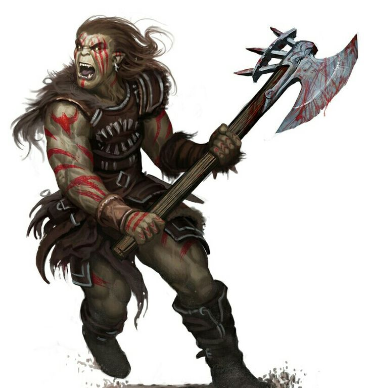

Для некоторых в жизни есть только ярость. В делах, в любви или в сражениях им важно только одно - борьба. Они дикари, наемники, мастера жестокого боя. Из них не выходит хороших солдат или профессиональных воинов - слишком они одержимы жаждой убийства и духом войны. Их называют варварами. Муштра, планирование и правила честного боя не для них. Им важен лишь тот единственный миг, когда они сойдутся с врагом лицом к лицу и жизнь их повиснет на волоске. Они обладают чутьем на опасность и способны вынести любые тяготы. Варваров можно найти и в цивилизованных, и в диких землях. Есть в мире места, где обитают целые племена таких дикарей. В груди варвара бушует первобытное пламя битвы, и горе тому, кто вызовет его ярость.
Варвары - превосходные бойцы, чья стойкость и воинственность позволяют справляться с врагами, калось бы превосходящими их силой. Ярость дарует им мощь и храбрость, равных которым нет. Варвары устремляются в бой, сметая все на своем пути.
Мировоззрение: Любое не принципиальное.
КЗ:d12.
Стартовое богатство: 3d6 x 10 зм (105 зм в среднем).
Акробатика (Лвк), Верховая езда (Лвк), Внимание (Мдр), Выживание (Мдр), Дрессировка (Хар), Запугивание (Хар), Знание (природа) (Инт), Лазание (Сил), Плавание (Сил), Ремесло (Инт)
Пункты навыков за уровень: 4 + модификатор Интеллекта.
| Ур | БМА | Стойкость | Реакция | Воля | Прочее |
|---|---|---|---|---|---|
| 1 | +1 | +2 | +0 | +0 | Быстрое перемещение, ярость |
| 2 | +2 | +3 | +0 | +0 | Дар ярости, невероятное уклонение |
| 3 | +3 | +3 | +1 | +1 | Чутье на ловушки +1 |
| 4 | +4 | +4 | +1 | +1 | Дар ярости |
| 5 | +5 | +4 | +1 | +1 | Невероятное уклонение+ |
| 6 | +6/+1 | +5 | +2 | +2 | Дар ярости, чутье на ловушки +2 |
| 7 | +7/+2 | +5 | +2 | +2 | Снижение урона 1/- |
| 8 | +8/+3 | +6 | +2 | +2 | Дар ярости |
| 9 | +9/+4 | +6 | +3 | +3 | Чутье на ловушки +3 |
| 10 | +10/+5 | +7 | +3 | +3 | Снижение урона 2/-‚ дар ярости |
| 11 | +11/+6/+1 | +7 | +3 | +3 | Бешеная ярость |
| 12 | +12/+7/+2 | +8 | +4 | +4 | Дар ярости, чутье на ловушки +4 |
| 13 | +13/+8/+3 | +8 | +4 | +4 | Снижение урона 3/- |
| 14 | +14/+9/+4 | +9 | +4 | +4 | Несокрушимая воля, дар ярости |
| 15 | +15/+10/+5 | +9 | +5 | +5 | Чутье на ловушки +5 |
| 16 | +16/+11/+6/+1 | +10 | +5 | +5 | Снижение урона 4/-‚ дар ярости |
| 17 | +17/+12/+7/+2 | +10 | +5 | +5 | Безмерная ярость |
| 18 | +18/+13/+8/+3 | +11 | +6 | +6 | Дар ярости, чутье на ловушки +6 |
| 19 | +19/+14/+9/+4 | +11 | +6 | +6 | Снижение урона 5/- |
| 20 | +20/+15/+10/+5 | +12 | +6 | +6 | Сокрушительная ярость, дар ярости |
Ношение брони и обращение с оружием:Варвар умеет обращаться со всем простым и особым оружием, использовать легкие и средние доспехи, а также щиты (кроме башенных).
Быстрое перемещение (Экс):Базовая скорость варвара увеличивается по сравнению с обычной для его народа на 10 футов. Это преимущество теряется, если на варваре тяжелый доспех или персонаж тяжело нагружен. Этот модификатор применяется до того, как скорость варвара модифицируется доспехом или нагрузкой. Он складывается с любыми другими модификаторами скорости.
Ярость (Экс):Варвар может пробуждать в себе мощь и свирепость, дающие ему преимущество в бою. Начиная с 1 уровня варвар каждый день может пребывать в ярости количество раундов, равное 4 + модификатор Выносливости. За каждый уровень после первого он может проводить в ярости на 2 раунда в день больше. Временные увеличения Выносливости (например, полученные от приступа ярости или заклинаний вроде медвежьей стойкости) не увеличивают это значение. Впадение в ярость - свободное действие. Количество доступных варвару раундов ярости возвращается к максимуму после 8 часов отдыха, но этот отдых необязательно должен быть непрерывным.
Пока варвар в ярости, он получает +4 (боевой дух) к Силе и Выносливости, а также +2 (боевой дух) к испытаниям Воли. Кроме того, он получает -2 к КБ. Увеличение Выносливости дает ему +2 П3 за каждую КЗ, но эти ПЗ пропадают, когда кончается ярость. Они не теряются первыми, как временные ПЗ. Варвар в ярости неспособен применять навыки, зависящие от Харизмы, Ловкости или Интеллекта (кроме Акробатики, Полета, Запугивания и Верховой езды), а также любые способности, требующие терпения или концентрации. Варвар может в любой момент прервать приступ ярости (свободное действие); по его окончании он считается утомленным в течение вдвое большего количества раундов, чем провел в ярости. Варвар не может впасть в ярость снова, пока он утомлен или обессилен, но других ограничений на повторное впадение в ярость в течение одного боя или иной ситуации у него нет. Если варвар оказывается без сознания, его ярость мгновенно проходит, что нередко грозит смертью.
Дары ярости (Экс):По мере роста в уровне варвар находит для своей ярости новые применения. На 2 уровне он получает дар ярости и далее приобретает по дару ярости за каждые последующие два уровня. Все преимущества даров работают только во время приступа ярости, а для некоторых из них требуются еще и определенные действия самого варвара. Если не сказано иное, варвар может выбрать любой дар ярости только один раз.
Варвар не может выбрать из более чем одной группы Тотемных даров ярости. Например, варвар, который выбирает дар ярости тотема зверя, не может позже выбрать какую-либо из даров ярости тотема духа.
Безоглядная ярость (Экс): В ярости варвар невосприимчив к состояниям потрясения и испуга. Выбрать этот дар ярости можно не раньше 12 уровня.
Бешеный верхолаз (Экс): В ярости варвар добавляет свой уровень в качестве бонуса (усиление) ко всем проверкам Лазания.
Бешеный пловец (Экс): В ярости варвар добавляет свой уровень в качестве бонуса (усиление) ко всем проверкам Плавания.
Бешеный прыгун (Экс): В ярости варвар добавляет свой уровень в качестве бонуса (усиление) ко всем проверкам Акробатики при прыжках. При этом варвар всегда считается прыгающим с разбега.
Быстрая реакция (Экс): В ярости варвар может совершать одну дополнительную внеочередную атаку в раунд.
Внезапная точность (Экс): Варвар получает +1 (боевой дух) к одной атаке. Этот бонус увеличивается на 1 за каждые четыре уровня варвара. Этот дар применяется в качестве быстрого действия непосредственно перед атакой. Его можно применять только один раз за приступ ярости.
Восстановление сил (Экс): В качестве основного действия варвар может восстановить себе 1d8 + модификатор Выносливости потерянных ПЗ. За каждые четыре уровня варвара выше 4 он восстанавливает еще +1d8 ПЗ до максимума в 5d8 ПЗ на 20 уровне. Выбрать этот дар ярости варвар может не раньше 4 уровня. Применяется он только раз в день и только когда варвар в ярости.
Враг не уйдет (Экс): В качестве прерывающего действия варвар может переместиться на расстояние вплоть до его удвоенной скорости, но только в случае‚ когда стоящий рядом с ним противник предпринимает отступление. Варвар должен закончить свое перемещение рядом с этим противником. Варвар при этом провоцирует внеочередные атаки по обычным правилам. Этот дар можно использовать только один раз за приступ ярости.
Звериная ярость (Экс): Находясь в ярости, варвар может атаковать укусом. Если он наносит укус как часть полной атаки, то проверка попадания делается с БМА варвара -5. При попадании варвар среднего размера наносит 1d4 урона, небольшого размера - 1d3 урона, плюс половина модификатора Силы в обоих случаях. Варвар также может укусить в качестве части действия по удержанию захвата или выходу из него. Укус при этом наносится до того, как варвар производит проверку маневра. В случае попадания персонаж получает до конца раунда +2 ко всем таким проверкам.
Крепость тела (Экс): В ярости варвар невосприимчив к дезориентации и тошноте. Выбрать этот дар ярости варвар может не раньше 8 уровня.
Мгновение ясности (Экс): Варвар в течение одного раунда не получает ни преимуществ, ни штрафов за ярость (включая штраф к КБ и ограничения на действия). Активация этой способности требует быстрого действия. Раунд мгновенной ясности вычитается из общего числа доступных раундов ярости в день. Этот дар можно применять только один раз за приступ ярости.
Могучий замах (Экс): Варвар автоматически подтверждает критический удар. Этот дар используется в качестве прерывающего действия в тот момент, когда возникает шанс нанести критический удар. Выбрать этот дар ярости варвар может не раньше 12 уровня. Могучий замах применяется только раз за приступ ярости.
Могучий удар (Экс): Варвар получает +1 к одной проверке урона и еще +1 за каждые четыре уровня. Этот дар требует быстрого действия и применяется перед проверкой попадания. Его можно использовать только один раз за приступ ярости.
Неожиданный удар (Экс): Варвар может совершить внеочередную атаку по противнику, вошедшему на контролируемую варваром клетку, независимо от того, дают ли правила возможность совершить такую атаку в обычном случае. Этот дар применяется только один раз за приступ ярости. Выбрать этот дар ярости варвар может не раньше 8 уровня.
Ночное зрение (Экс): В ярости варвар обретает небывалую зоркость, получая ночное зрение 60 футов. Варвар может выбрать этот дар, только если у него уже есть дар ярости - сумеречное зрение или одноименная особенность народа.
Нюх (Экс): Варвар в ярости обретает способность нюх и может с ее помощью находить невидимых врагов.
Оборонительная стойка (Экс): Варвар получает +1 (уклонение) к КБ против атак в ближнем бою на количество раундов, равное его текущему модификатору Выносливости (минимум +1). Этот бонус возрастает на 1 за каждые шесть уровней варвара. Применение этой способности требует сопутствующего действия и не провоцирует внеочередные атаки.
Отбрасывание (Экс): Один раз в раунд варвар вместо атаки в ближнем бою может попытаться протаранить одного противника. При успехе его жертва получает урон, равный модификатору Силы варвара, и ее отбрасывает прочь по обычным правилам. Варвар не обязан двигаться вслед за противником. Это действие не провоцирует внеочередные атаки.
Прилив сил (Экс): Один раз за приступ ярости варвар может в качестве прерывающего действия добавить свой уровень варвара к проверке Силы, боевому маневру или ЗБМ.
Резвый (Экс): Варвар получает бонус (усиление) +5 футов к своей базовой скорости, пока находится в ярости. Этот дар можно брать до трех раз, а его эффекты складываются.
Снижение урона+ (Экс): Снижение урона варвара увеличивается на 1/-. Оно работает все время, пока варвар в ярости. Этот дар можно брать до трех раз, а его эффекты складываются. Варвар может выбрать этот дар ярости не раньше 8 уровня.
Сумеречное зрение (Экс): Когда варвар находится в ярости, его чувства обостряются и он обретает сумеречное зрение.
Ужасный вой (Экс): В качестве основного действия варвар может испустить ужасный вой. Все потрясенные противники в радиусе 30 футов от него должны пройти испытание Воли (СЛ равна 10 + 1/2 уровня варвара + модификатор Силы варвара) и в случае провала впасть в панику на 1d4+1 раунда. Существо, уже прошедшее такое испытание (вне зависимости от результата), становится невосприимчивым к ужасному вою на 24 часа. Выбрать этот дар ярости варвар может не раньше 8 уровня и только если у него уже есть дар ярости устрашающий взгляд.
Уклонение от выстрелов (Экс): Варвар получает +1 (уклонение) к своему КБ против дистанционных атак на количество раундов, равное его текущему модификатору Выносливости (минимум 1). Этот бонус увеличивается на 1 за каждые шесть уровней варвара. Применение этой способности является сопутствующим действием, не провоцирующим внеочередных атак.
Устрашающий взгляд (Экс): В качестве сопутствующего действия варвар может совершить проверку Запугивания против врага на соседней клетке. Если он успешно деморализует противника, тот оказывается потрясен на 1d4 раунда + 1 раунд за каждые 5 пунктов, на которые результат проверки Запугивания превысил СЛ.
Ярость с недосыпа (Экс): Варвар может впадать в ярость, даже если он утомлен. После применения этой способности персонаж становится невосприимчив к эффектам утомления, пока пребывает в ярости. По окончании приступа ярости он обессилен на 10 минут за каждый раунд, который провел в ярости.
Ясный разум (Экс): Варвар может пройти заново одно испытание Воли. Это требует прерывающего действия, которое совершается сразу после первой попытки пройти испытание, но до того, как велущий объявит результаты. Варвар должен принять результат второго броска, даже если он окажется хуже. Выбрать этот дар ярости варвар может не раньше 8 уровня. Этот дар применяется только один раз за приступ ярости.
Невероятное уклонение (Экс): На 2 уровне варвар обретает способность реагировать на опасность быстрее мысли. Его нельзя застать врасплох и он не теряет бонус Ловкости к КБ, если противник невидим. Но он все же теряет этот бонус, если не может двигаться, а также если противник успешно применит против него финт. Если варвар уже получил эту особенность от другого класса, он автоматически приобретает вместо нее особенность невероятное уклонение+ (см. ниже).
Чутье на ловушки (Экс):На 3 уровне варвар получает +1 к испытаниям Реакции против ловушек и бонус +1 (уклонение) к КБ от атак ловушек. Эти бонусы увеличиваются на 1 за каждые три уровня варвара после 3 (на уровнях 6, 9, 12, 15 и 18). Преимущества чутья на довушки, полученные от разных классов, складываются.
Невероятное уклонение+ (Экс):С 5 уровня варвара нельзя взять в тиски. Плут при этом не может атаковать варвара исподтишка, взяв его в тиски, если только его уровень плута не превышает уровень варвара на 4. Если у персонажа уже есть полученная от другого класса особенность невероятное укдонение (см. выше), уровни в этих классах складываются для определения того, какой минимальный уровень плута нужен для взятия персонажа в тиски.
Снижение урона (Экс):На 7 уровне у варвара появляется способность снижать полученный урон. Из любого урона, нанесенного ему естественным или рукотворным оружием, вычитается 1. На 10 уровне - и каждом третьем уровне варвара после этого (уровни 13, 16 и 19) - это снижение урона возрастает еще на 1. Снижение урона может уменьшить урон до нуля, но не до отрицательных величин.
Бешеная ярость (Экс):Начиная с 11 уровня варвар, впадая в ярость, получает бонус +6 (боевой дух) к Силе и Выносливости и +3 (боевой дух) к испытаниям Воли. Эти числа заменяют прежние соответствующие модификаторы.
Несокрушимая воля (Экс):Варвар 14 уровня и выше, пребывая в ярости, получает +4 к испытаниям Воли против заклинаний школы очарования. Этот модификатор суммируется со всеми прочими, включая полученные от ярости.
Безмерная ярость (Экс):Начиная с 17 уровня варвар не утомляется после приступа ярости.
Сокрушительная ярость (Экс):Начиная с 20 уровня варвар, впадая в ярость, получает бонус +8 (боевой дух) к Силе и Выносливости, и +4 (боевой дух) к испытаниям Воли. Эти числа заменяют прежние соответствующие модификаторы.
Варвар, ставший принципиальным, теряет способность приходить в ярость и получать новые уровни варвара. Он сохраняет все прочие способности класса.
Назад к списку классов